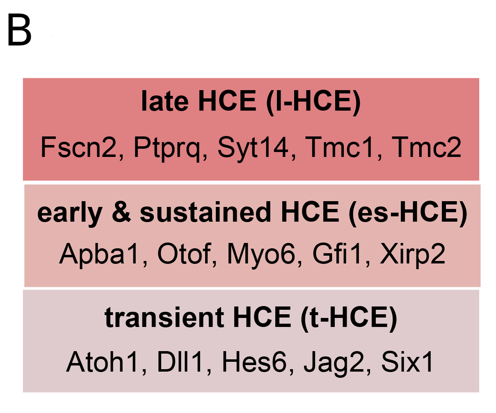
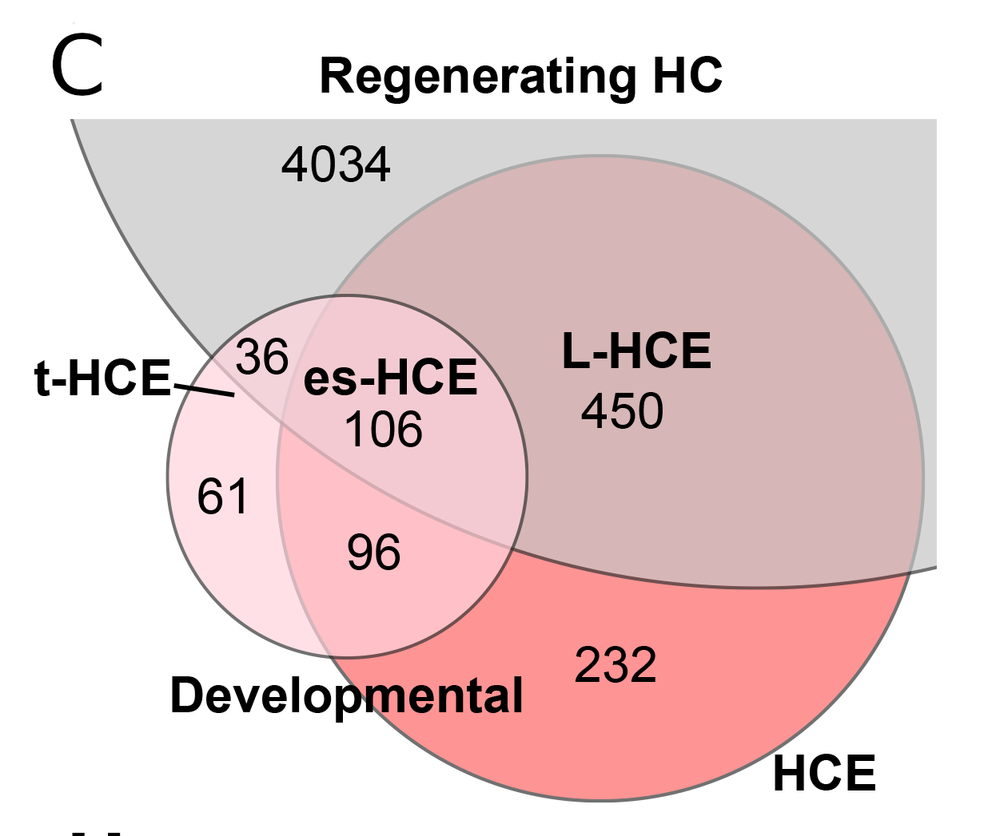

To be able to compare hair cell development and regeneration across species, we sought to define a common set of genes that define hair cells as distinct from supporting cells. To do so we integrated single-cell RNA-sequencing (scRNA-seq) datasets from zebrafish, chicken, mouse, and human inner ear organs to create a cross-species atlas of 36 hair cell subtypes, as compared to supporting cells in the same organs. Hierarchical clustering revealed species- and organ-specific gene expression programs as well as sets of pan-hair cell genes. We identified 884 hair cell-enriched (HCE) genes whose expression was elevated in most or all hair cell subtypes. These HCE genes included those implicated in deafness and in core functions such as mechanotransduction and synaptic transmission. We further validated novel HCE genes using in situ hybridization and demonstrated their utility in benchmarking hair cell development, regeneration, and reprogramming.
Comparison of multiple HC types across 39 scRNAseq datasets
A. Examples of datasets used for hair cell analysis
B. Correlation analysis of transcriptomes for 23 hair cell types
Subsets of HCE genes define distinct phases of development and regeneration

A. Comparison of average AUC scores calculated for developmental and mechanosensitive (mature) datasets. Each quadrant (Late, Early & Sustained, and Transient) defines subsets of hair cell-enriched genes relevant to hair cell maturation
B. Examples of genes within each subset defined in A
C. Distribution of defined subsets expressed during hair cell regeneration in chick basilar papilla

Explore data in gEAR!


Hierarchical clustering

Machine Learning